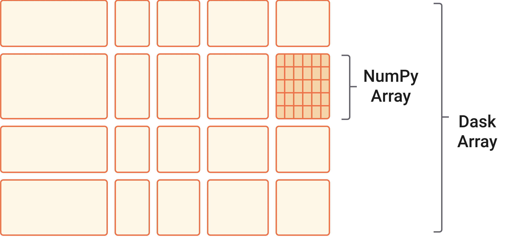

Parallelization with Dask¶
To the user Dask looks a lot like NumPy, with the key difference that it breaks up your array into smaller chunks and then coordinates across CPUs on your machine to process those chunks in parallel. Most of this is done without you ever having to know about it! That being said, there are still some tips and trick to getting Dask to work as efficiently as possible for your project.
The key advantage to Dask, is that you data still looks like a single array to you (the developer) but it can be split up behind the scenes. This allows you to use your typical data analysis workflow on arrays that are larger than what you can store in your computers memory. It also allows you to take advantage of all of the CPUs available to you. On a laptop computer you definitely have more than 1 core, maybe as many as 12 or 16. On a server or super computer this could be in the hundreds. This makes it much more tractable to process datasets that are hundreds of GB or even TB.

Dask arrays are also lazy which means that the values are not actually computed until they are needed. You can trigger the computation with .compute(), .load(), or by generating a plot. This is nice in that it allows Dask to decide the most efficient way to compute your entire analysis chain and do that at once (as opposed to in many little sub-steps). It also means that if you never actually need a certain intermediate variable, it won’t get computed.
Finally, Dask integrates directly with Xarray. Xarray DataArrays can be turned into Dask arrays by specifying that they should be chunked. Other than that you do not need to change the rest of your code. You may decide to insert .compute() or .load() calls at particular junctions as you figure out more about your project and workflow. If you overarching goal, however, is to generate plots, then you don’t have to change anything else.
Using Dask¶
There are two common ways to use Dask. One is to turn an Xarray DataArray into a Dask array with .chunk() and to never import Dask directly (it comes with Xarray). You can chunk by any dimension you want (and my multiple dimensions). You also can have the compiler automatically decide how to chunk by passing auto.
[1]:
import xarray as xr
import warnings
warnings.filterwarnings("ignore")
ds = xr.open_dataset('TPOSE6_Daily_2012.nc',decode_timedelta=True).chunk({'time': 'auto'})
If we inspect the dataset, we can see that the underlying type of the variables is now dask.array and that each variable has a particular chunksize.
[2]:
ds
[2]:
<xarray.Dataset> Size: 3GB
Dimensions: (time: 366, Z: 22, YC: 84, XG: 241, YG: 85, XC: 240)
Coordinates: (12/26)
iter (time) int64 3kB dask.array<chunksize=(366,), meta=np.ndarray>
* time (time) timedelta64[ns] 3kB 00:01:12 00:02:24 ... 01:10:48 01:12:00
* YC (YC) float64 672B -3.917 -3.75 -3.583 -3.417 ... 9.583 9.75 9.917
* XG (XG) float64 2kB 210.0 210.2 210.3 210.5 ... 249.7 249.8 250.0
* Z (Z) float64 176B -1.0 -3.0 -5.0 -7.0 ... -68.5 -76.0 -85.0 -95.0
dyG (YC, XG) float32 81kB dask.array<chunksize=(84, 241), meta=np.ndarray>
... ...
rA (YC, XC) float32 81kB dask.array<chunksize=(84, 240), meta=np.ndarray>
Depth (YC, XC) float32 81kB dask.array<chunksize=(84, 240), meta=np.ndarray>
hFacC (Z, YC, XC) float32 2MB dask.array<chunksize=(22, 84, 240), meta=np.ndarray>
maskC (Z, YC, XC) bool 444kB dask.array<chunksize=(22, 84, 240), meta=np.ndarray>
dxF (YC, XC) float32 81kB dask.array<chunksize=(84, 240), meta=np.ndarray>
dyF (YC, XC) float32 81kB dask.array<chunksize=(84, 240), meta=np.ndarray>
Data variables:
UVEL (time, Z, YC, XG) float32 652MB dask.array<chunksize=(75, 22, 84, 241), meta=np.ndarray>
VVEL (time, Z, YG, XC) float32 657MB dask.array<chunksize=(74, 22, 85, 240), meta=np.ndarray>
THETA (time, Z, YC, XC) float32 649MB dask.array<chunksize=(75, 22, 84, 240), meta=np.ndarray>
SALT (time, Z, YC, XC) float32 649MB dask.array<chunksize=(75, 22, 84, 240), meta=np.ndarray>If we inspect a single variable, like zonal velocity (UVEL), we can actually get a visualization of the chunks (cool!).
[3]:
ds.UVEL
[3]:
<xarray.DataArray 'UVEL' (time: 366, Z: 22, YC: 84, XG: 241)> Size: 652MB
dask.array<xarray-UVEL, shape=(366, 22, 84, 241), dtype=float32, chunksize=(75, 22, 84, 241), chunktype=numpy.ndarray>
Coordinates: (12/13)
iter (time) int64 3kB dask.array<chunksize=(366,), meta=np.ndarray>
* time (time) timedelta64[ns] 3kB 00:01:12 00:02:24 ... 01:10:48 01:12:00
* YC (YC) float64 672B -3.917 -3.75 -3.583 -3.417 ... 9.583 9.75 9.917
* XG (XG) float64 2kB 210.0 210.2 210.3 210.5 ... 249.7 249.8 250.0
* Z (Z) float64 176B -1.0 -3.0 -5.0 -7.0 ... -68.5 -76.0 -85.0 -95.0
dyG (YC, XG) float32 81kB dask.array<chunksize=(84, 241), meta=np.ndarray>
... ...
rAw (YC, XG) float32 81kB dask.array<chunksize=(84, 241), meta=np.ndarray>
drF (Z) float32 88B dask.array<chunksize=(22,), meta=np.ndarray>
PHrefC (Z) float32 88B dask.array<chunksize=(22,), meta=np.ndarray>
hFacW (Z, YC, XG) float32 2MB dask.array<chunksize=(22, 84, 241), meta=np.ndarray>
maskW (Z, YC, XG) bool 445kB dask.array<chunksize=(22, 84, 241), meta=np.ndarray>
rhoRef (Z) float32 88B dask.array<chunksize=(22,), meta=np.ndarray>
Attributes:
standard_name: UVEL
long_name: Zonal Component of Velocity (m/s)
units: m/s
mate: VVELThe info above tells us how big each chunk is. You can see that the automatically generated chunks are ~125 MB. We wouldn’t want to go much smaller than this, because we will eventually lose some efficiently trying to process many tiny pieces of data that are much smaller than what we can fit in memory.
Exercise, Xarray and XGCM with Dask¶
First we will redo the divergence calculation from the Xarray tutorial, without any Dask chunks. Let’s delete our original dataset to be safe and reload the data.
[26]:
del ds
[27]:
import xarray as xr
import warnings
warnings.filterwarnings("ignore")
ds = xr.open_dataset('TPOSE6_Daily_2012.nc',decode_timedelta=True)
We can inspect a variable, and check that the dask chunks are gone.
[6]:
ds.THETA
[6]:
<xarray.DataArray 'THETA' (time: 366, Z: 22, YC: 84, XC: 240)> Size: 649MB
[162328320 values with dtype=float32]
Coordinates: (12/14)
iter (time) int64 3kB ...
* time (time) timedelta64[ns] 3kB 00:01:12 00:02:24 ... 01:10:48 01:12:00
* YC (YC) float64 672B -3.917 -3.75 -3.583 -3.417 ... 9.583 9.75 9.917
* Z (Z) float64 176B -1.0 -3.0 -5.0 -7.0 ... -68.5 -76.0 -85.0 -95.0
drF (Z) float32 88B ...
PHrefC (Z) float32 88B ...
... ...
rA (YC, XC) float32 81kB ...
Depth (YC, XC) float32 81kB ...
hFacC (Z, YC, XC) float32 2MB ...
maskC (Z, YC, XC) bool 444kB ...
dxF (YC, XC) float32 81kB ...
dyF (YC, XC) float32 81kB ...
Attributes:
standard_name: THETA
long_name: Potential Temperature
units: degCNow let’s do our divergence computation from the last lesson.
[7]:
import xgcm
import cmocean.cm as cmo
# create the grid object from our dataset
grid = xgcm.Grid(ds, periodic=['X','Y'])
grid
[7]:
<xgcm.Grid>
Z Axis (not periodic, boundary=None):
* center Z
X Axis (periodic, boundary=None):
* center XC --> outer
* outer XG --> center
Y Axis (periodic, boundary=None):
* center YC --> outer
* outer YG --> center
T Axis (not periodic, boundary=None):
* center time
[8]:
%%time
u_transport = ds.UVEL * ds.dyG * ds.hFacW * ds.drF
v_transport = ds.VVEL * ds.dxG * ds.hFacS * ds.drF
div_uv = (grid.diff(u_transport, 'X') + grid.diff(v_transport, 'Y')) / ds.rA # calculate the divergence of the flow
div_uv
CPU times: user 346 ms, sys: 667 ms, total: 1.01 s
Wall time: 1.01 s
[8]:
<xarray.DataArray (time: 366, Z: 22, YC: 84, XC: 240)> Size: 649MB
array([[[[ 1.37244683e-06, 1.43047191e-06, 1.46951675e-06, ...,
6.62662956e-07, 1.10988776e-06, 1.41652595e-06],
[ 5.94653841e-07, 6.68495829e-07, 7.41130521e-07, ...,
1.22283927e-06, 1.87492367e-06, 2.07832477e-06],
[-3.75415624e-07, -3.15581644e-07, -2.50060850e-07, ...,
1.70110923e-06, 1.76351773e-06, 1.99446072e-06],
...,
[ 8.62729678e-07, 7.14634893e-07, 3.88255700e-07, ...,
-3.11771328e-06, -2.89566060e-06, -2.37975678e-06],
[ 8.57911502e-08, -4.61088696e-08, -3.47979068e-07, ...,
-3.19846913e-06, -2.62534672e-06, -2.25218719e-06],
[-7.58210774e-07, -6.46966441e-07, -7.30312934e-07, ...,
-2.86520299e-06, -2.44957505e-06, -2.19216781e-06]],
[[ 1.34057188e-06, 1.40016880e-06, 1.44013302e-06, ...,
7.09427923e-07, 1.17261857e-06, 1.48308425e-06],
[ 5.64541381e-07, 6.34911260e-07, 7.06026526e-07, ...,
1.25195004e-06, 1.92384437e-06, 2.14392071e-06],
[-4.11960059e-07, -3.54990362e-07, -2.90499941e-07, ...,
1.67858138e-06, 1.79416759e-06, 2.04223534e-06],
...
-8.71693283e-06, -5.95823076e-06, -6.15254976e-06],
[-6.71484213e-06, -4.20082051e-06, -2.26667885e-06, ...,
3.52229357e-09, 1.22546305e-06, -1.09015275e-06],
[-2.41673092e-06, -2.31488502e-06, -1.91019740e-06, ...,
9.23616972e-06, 7.55049496e-06, 6.20488800e-06]],
[[-1.69971406e-06, -1.02415493e-06, -4.37987836e-07, ...,
7.77255536e-07, 9.61086997e-08, -7.09721562e-08],
[-5.18033232e-07, -3.21178746e-08, 5.64866127e-07, ...,
2.97049564e-06, 3.35908271e-06, 3.85124167e-06],
[ 2.11237398e-06, 2.65563722e-06, 3.24382063e-06, ...,
9.82252459e-07, 1.40929524e-06, 8.60606008e-07],
...,
[-4.70574696e-06, -3.26171971e-06, -2.07992093e-06, ...,
-8.10987694e-06, -5.83119663e-06, -5.26532494e-06],
[-5.91146409e-06, -3.32312925e-06, -2.49081700e-06, ...,
-2.19475260e-06, -7.33080412e-07, -2.52351583e-06],
[-2.57763872e-06, -3.84479017e-06, -2.77097206e-06, ...,
6.42505483e-06, 4.72095462e-06, 3.74518891e-06]]]],
shape=(366, 22, 84, 240), dtype=float32)
Coordinates:
* time (time) timedelta64[ns] 3kB 00:01:12 00:02:24 ... 01:10:48 01:12:00
* Z (Z) float64 176B -1.0 -3.0 -5.0 -7.0 ... -68.5 -76.0 -85.0 -95.0
* YC (YC) float64 672B -3.917 -3.75 -3.583 -3.417 ... 9.583 9.75 9.917
* XC (XC) float64 2kB 210.1 210.2 210.4 210.6 ... 249.6 249.8 249.9
rA (YC, XC) float32 81kB ...
Depth (YC, XC) float32 81kB ...
dxF (YC, XC) float32 81kB ...
dyF (YC, XC) float32 81kB ...Our timer tells us that this took about 1 second. Let’s clear our intermediate variables and do it again with Dask.
[9]:
del div_uv, u_transport, v_transport
Xarray automatically sped up with Dask¶
This time, let’s specify chunks of 10 timesteps.
[28]:
ds = ds.chunk({'time': 10})
[29]:
ds.THETA
[29]:
<xarray.DataArray 'THETA' (time: 366, Z: 22, YC: 84, XC: 240)> Size: 649MB
dask.array<xarray-THETA, shape=(366, 22, 84, 240), dtype=float32, chunksize=(10, 22, 84, 240), chunktype=numpy.ndarray>
Coordinates: (12/14)
iter (time) int64 3kB dask.array<chunksize=(10,), meta=np.ndarray>
* time (time) timedelta64[ns] 3kB 00:01:12 00:02:24 ... 01:10:48 01:12:00
* YC (YC) float64 672B -3.917 -3.75 -3.583 -3.417 ... 9.583 9.75 9.917
* Z (Z) float64 176B -1.0 -3.0 -5.0 -7.0 ... -68.5 -76.0 -85.0 -95.0
drF (Z) float32 88B dask.array<chunksize=(22,), meta=np.ndarray>
PHrefC (Z) float32 88B dask.array<chunksize=(22,), meta=np.ndarray>
... ...
rA (YC, XC) float32 81kB dask.array<chunksize=(84, 240), meta=np.ndarray>
Depth (YC, XC) float32 81kB dask.array<chunksize=(84, 240), meta=np.ndarray>
hFacC (Z, YC, XC) float32 2MB dask.array<chunksize=(22, 84, 240), meta=np.ndarray>
maskC (Z, YC, XC) bool 444kB dask.array<chunksize=(22, 84, 240), meta=np.ndarray>
dxF (YC, XC) float32 81kB dask.array<chunksize=(84, 240), meta=np.ndarray>
dyF (YC, XC) float32 81kB dask.array<chunksize=(84, 240), meta=np.ndarray>
Attributes:
standard_name: THETA
long_name: Potential Temperature
units: degCFantastic. That is exactly what we would hope to see. Now, can we do our divergence calculation any faster??
[30]:
# create the grid object from our dataset
grid = xgcm.Grid(ds, periodic=['X','Y'])
grid
[30]:
<xgcm.Grid>
Z Axis (not periodic, boundary=None):
* center Z
X Axis (periodic, boundary=None):
* center XC --> outer
* outer XG --> center
Y Axis (periodic, boundary=None):
* center YC --> outer
* outer YG --> center
T Axis (not periodic, boundary=None):
* center time
[31]:
%%time
u_transport = ds.UVEL * ds.dyG * ds.hFacW * ds.drF
v_transport = ds.VVEL * ds.dxG * ds.hFacS * ds.drF
div_uv = (grid.diff(u_transport, 'X') + grid.diff(v_transport, 'Y')) / ds.rA # calculate the divergence of the flow
div_uv.compute()
CPU times: user 894 ms, sys: 1.05 s, total: 1.95 s
Wall time: 498 ms
[31]:
<xarray.DataArray (time: 366, Z: 22, YC: 84, XC: 240)> Size: 649MB
array([[[[ 1.37244683e-06, 1.43047191e-06, 1.46951675e-06, ...,
6.62662956e-07, 1.10988776e-06, 1.41652595e-06],
[ 5.94653841e-07, 6.68495829e-07, 7.41130521e-07, ...,
1.22283927e-06, 1.87492367e-06, 2.07832477e-06],
[-3.75415624e-07, -3.15581644e-07, -2.50060850e-07, ...,
1.70110923e-06, 1.76351773e-06, 1.99446072e-06],
...,
[ 8.62729678e-07, 7.14634893e-07, 3.88255700e-07, ...,
-3.11771328e-06, -2.89566060e-06, -2.37975678e-06],
[ 8.57911502e-08, -4.61088696e-08, -3.47979068e-07, ...,
-3.19846913e-06, -2.62534672e-06, -2.25218719e-06],
[-7.58210774e-07, -6.46966441e-07, -7.30312934e-07, ...,
-2.86520299e-06, -2.44957505e-06, -2.19216781e-06]],
[[ 1.34057188e-06, 1.40016880e-06, 1.44013302e-06, ...,
7.09427923e-07, 1.17261857e-06, 1.48308425e-06],
[ 5.64541381e-07, 6.34911260e-07, 7.06026526e-07, ...,
1.25195004e-06, 1.92384437e-06, 2.14392071e-06],
[-4.11960059e-07, -3.54990362e-07, -2.90499941e-07, ...,
1.67858138e-06, 1.79416759e-06, 2.04223534e-06],
...
-8.71693283e-06, -5.95823076e-06, -6.15254976e-06],
[-6.71484213e-06, -4.20082051e-06, -2.26667885e-06, ...,
3.52229357e-09, 1.22546305e-06, -1.09015275e-06],
[-2.41673092e-06, -2.31488502e-06, -1.91019740e-06, ...,
9.23616972e-06, 7.55049496e-06, 6.20488800e-06]],
[[-1.69971406e-06, -1.02415493e-06, -4.37987836e-07, ...,
7.77255536e-07, 9.61086997e-08, -7.09721562e-08],
[-5.18033232e-07, -3.21178746e-08, 5.64866127e-07, ...,
2.97049564e-06, 3.35908271e-06, 3.85124167e-06],
[ 2.11237398e-06, 2.65563722e-06, 3.24382063e-06, ...,
9.82252459e-07, 1.40929524e-06, 8.60606008e-07],
...,
[-4.70574696e-06, -3.26171971e-06, -2.07992093e-06, ...,
-8.10987694e-06, -5.83119663e-06, -5.26532494e-06],
[-5.91146409e-06, -3.32312925e-06, -2.49081700e-06, ...,
-2.19475260e-06, -7.33080412e-07, -2.52351583e-06],
[-2.57763872e-06, -3.84479017e-06, -2.77097206e-06, ...,
6.42505483e-06, 4.72095462e-06, 3.74518891e-06]]]],
shape=(366, 22, 84, 240), dtype=float32)
Coordinates:
* time (time) timedelta64[ns] 3kB 00:01:12 00:02:24 ... 01:10:48 01:12:00
* Z (Z) float64 176B -1.0 -3.0 -5.0 -7.0 ... -68.5 -76.0 -85.0 -95.0
* YC (YC) float64 672B -3.917 -3.75 -3.583 -3.417 ... 9.583 9.75 9.917
* XC (XC) float64 2kB 210.1 210.2 210.4 210.6 ... 249.6 249.8 249.9
rA (YC, XC) float32 81kB 3.425e+08 3.425e+08 ... 3.382e+08 3.382e+08
Depth (YC, XC) float32 81kB 4.65e+03 4.491e+03 ... 3.44e+03 3.665e+03
dxF (YC, XC) float32 81kB 1.849e+04 1.849e+04 ... 1.825e+04 1.825e+04
dyF (YC, XC) float32 81kB 1.853e+04 1.853e+04 ... 1.853e+04 1.853e+04We can see that without Dask, this computation took a little over 1 second. With Dask it only took 450ms. That is more than a 2x speed up! When you take into account that this subset of the model output is less than 2% of the full model domain and only 20% of the model time series, that speed up starts to look pretty nice! If you are clever about when and how you chunk your data, you can get much more than a 2x speed up.
NOTE Another reason we only see 2x speed up here is that 1) these are relatively small chunks of data, 2) I am running this test on a fairly powerful laptop, and 3) there are many other processs running on this laptop (the CPUs are not dedicated to a particular task). There is some overhead to parallelization (your computer has to do some logistics in the background). Small chunks are inefficient because the overhead and the computation itself may take similar amounts of time. You can get much better performance if the CPUs and I/O are dedicated to the data analysis task (like on a supercomputer). You will have to figure out what works the best for your project/data/resources (run some tests!).